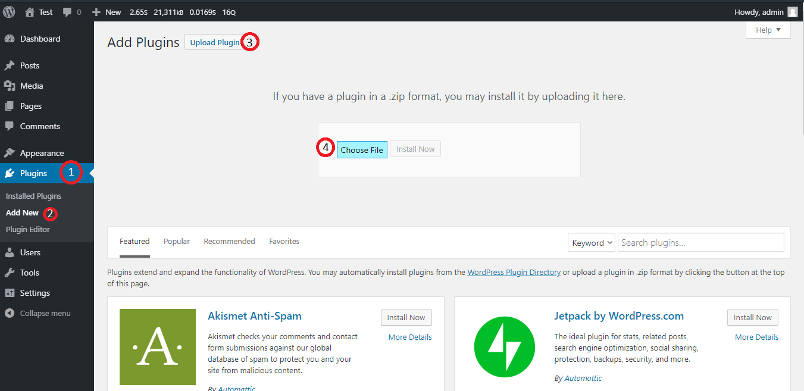
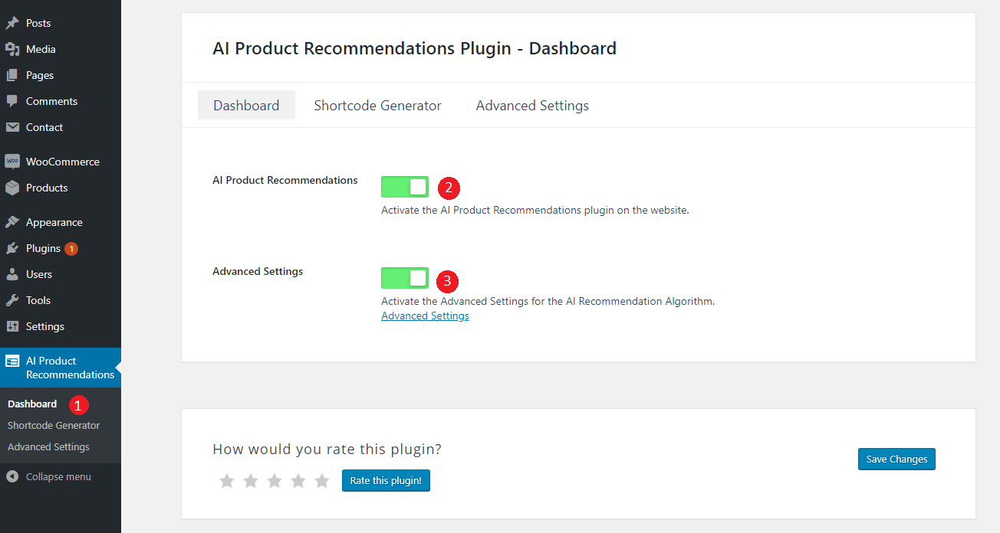
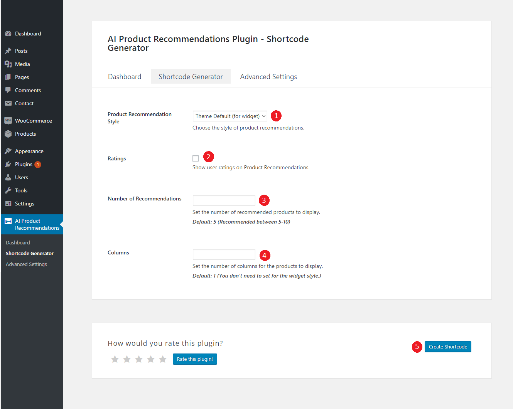
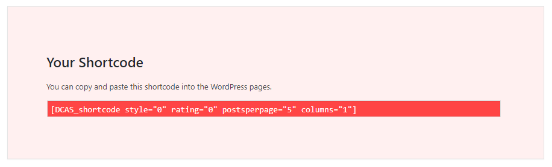
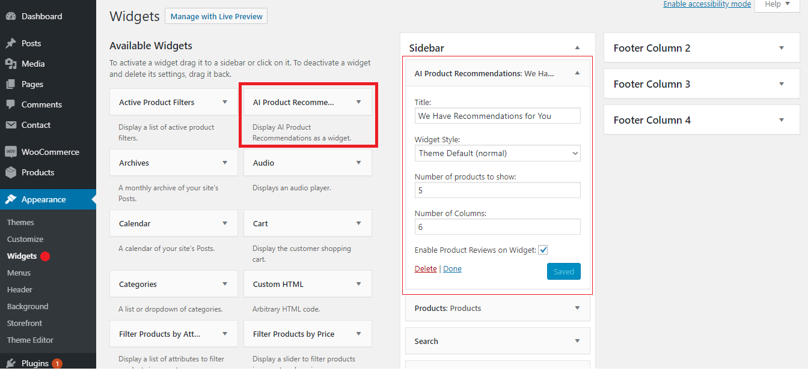
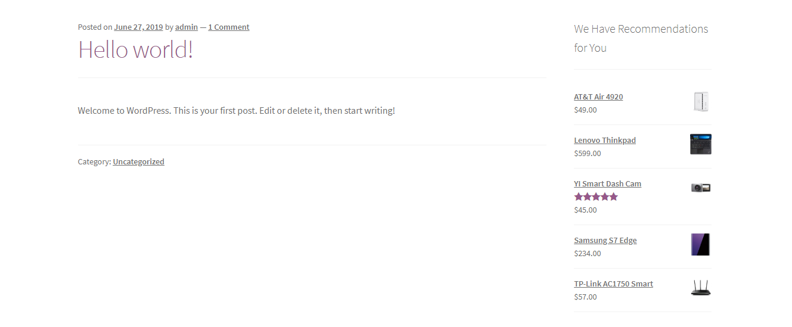
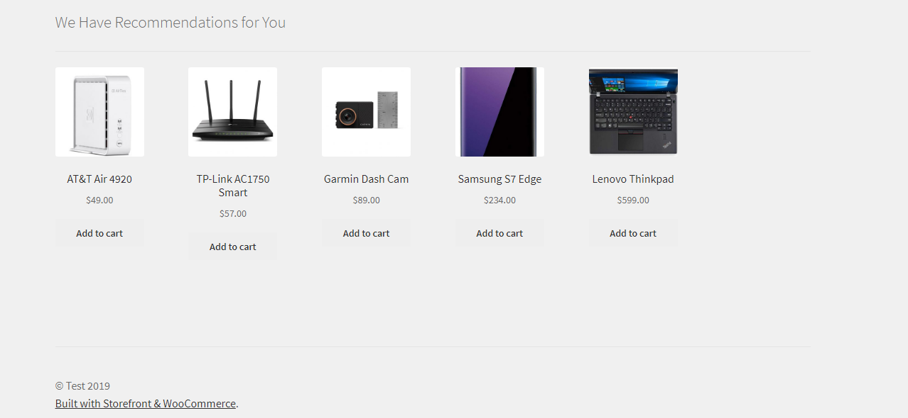
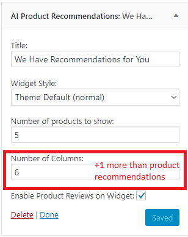
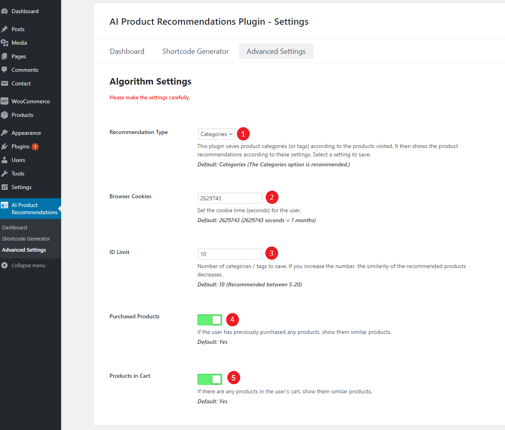

Step 1 - Installation the Plugin
In your WordPress Dashboard,
Menu > Plugins > Add New > Upload Plugin > Upload the plugin zip file you downloaded from CodeCanyon > Activate Plugin

Step 2 - Activation the Plugin
1) (1, 2)In your WordPress Dashboard, Menu > Progress Ads > Dashboard > AI Product Recommendations and go to the plugin control page and activate it.(3) If you want to change the plugin defaults, you can enable the Advanced Settings option.
Step 3 - Shortcode Generator Settings
1) You can create a shortcode in this field and it anywhere on your website. (These shortcodes shows displays the contents of AI Product Recommendations.)
(1) With Product Style option, you can set the styles of the products to be displayed. (2)You can select this option for show the ratings in your products. (3) Set the number of products to display. (4) Set the number of products you want to display side by side (columns). You can create up to 6. (5) After you create a shortcode, you will receive a shortcode like this:

Step 4 - Widget Settings
1) Widget settings and widget styles.
Theme Default (Widget) Style:

Theme Default (Normal) Style:
When using the Theme Defaults (normal) style, be sure to set the number of columns

Step 5 - Advanced Settings
1) You can set the algorithm for AI recommendations on this page.
(1) This plugin saves product categories (or tags) according to the products visited. Adjust to show recommended products by category or tags. (2) Set the duration of cookies for visitors. (in seconds) (3) Specify the maximum number of IDs to register. (Similarity decreases as the ID number increases.) (4) If your users have previously purchased any products, suggest similar products. (5) If there are any products in the user's cart, show them similar products.